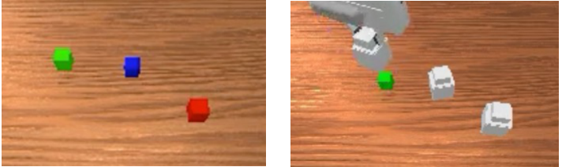
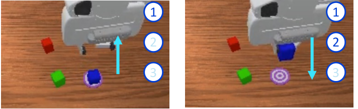
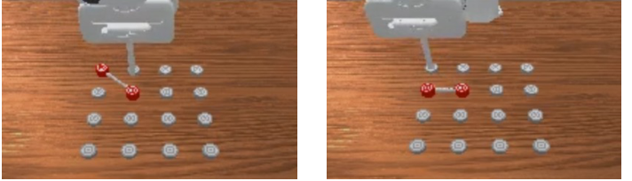

Grounded in observations
Interface queries attend to vision-language features. Action and proprioception tokens do not directly enter memory writes.
T2MEM gives a robot policy an evolving memory of what it has seen, so it can act on information that is no longer in view.
Explore the method ↓The scene changes.
The evidence still matters.

Recover an earlier visual cue.

Track events across time.

Remember a demonstrated order.
Mean success on RoboMME
Over the memory-free π0.5 baseline
Across four memory categories
A compact neural memory sits between vision-language perception and the action expert. Select a step to follow one decision.
Schematic animation; cell colors illustrate weight updates, not measured values. Blue: perception / retrieval. Orange: self-supervised writes.
Interface queries attend to vision-language features. Action and proprioception tokens do not directly enter memory writes.
Reconstruction residuals and update alignment regulate write strength, limiting repeated reinforcement of correlated observations.
Slow parameters stay fixed at deployment. Fast weights update online and reset to their learned initialization for each episode.

Action supervision shapes both memory formation and control. Alternating their updates gives each component a fixed counterpart.
With the same training budget, alternating optimization improves success on both evaluated tasks.
Task-specific checkpoints; these are separate from the 16-task results below.
16 RoboMME manipulation tasks. Four categories. Explore aggregate performance or compare individual tasks.
Main evaluation: 50 test episodes per task × 3 evaluation seeds. Baseline scores are quoted from the RoboMME paper. Selected non-privileged comparisons are shown; category means are calculated from the reported task scores.
| Task | π0.5 | MemER | FrameSamp + Modul | T2MEM |
|---|
Intervening on stored content tests whether the policy actually uses history, rather than relying on the current scene alone.
300 / 300 successful trials
50 counterfactual pairs, both pairing directions, three seeds. Instruction, environment goal and diffusion seed are held fixed within each comparison.
Disabling writes while retaining reads and the learned initialization reduces success.
Before occlusion
After occlusion
With eight writes each, pre-occlusion memory matches the performance of all 16 demonstration writes.
VideoUnmask demonstration-window intervention; write stride 4.Lower early-memory reconstruction error than fixed β = 1, across 20 long VideoUnmask Hard episodes.
300 subsequent real frames; architecture, write cadence and step-size calibration held fixed.History is encoded in fixed-size fast weights, with no external autoregressive reasoning call.
RTX A5000 · batch size 1 · synchronized after warm-up. Excludes initialization, compilation, communication, simulation and action execution. MemER uses a 64-token generation budget.
Memory retention does not by itself solve temporal reasoning or precise control. Swap tasks remain challenging, and insertion can fail even when the correct target is identified. T2MEM supplies historical evidence that the underlying policy must still interpret and act on.